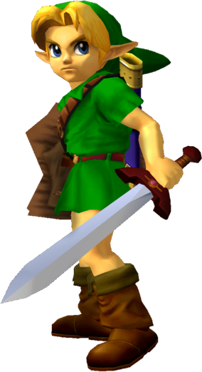

|  | Ranked 16th of tier list : YOUNG LINK |
| Weight | |
|---|---|
| 17-19th heaviest (16-19th in PAL) | |
| Shield stats | |
| Roll lenght | 3rd longest |
| Shield size | 24th biggest |
| Grab range | 3rd longest |
| Wavedash lenght | 15th longest |
| Movement stats | |
| Walking speed | 6-10th fastest |
| Turning speed | 7th fastest |
| Running speed | 7-10th fastest |
| Aerial stats | |
| Jump squat | 5 frames (8th fastest) |
| Short hop | 18-23rd highest |
| Aerial speed | 6-7th fastest |
| First jump height | 9th highest |
| Seconde jump height | 4th lowest |
| Total jump height | 18th highest |
| Average fall speed | 8-10th fastest |
| Fast falling speed | 19-20th fastest |
| Falling speed | 7-9th fastest |
| Ledge stats | |
| 0-99% ledge roll | 2nd longest |
| 100%+ ledge roll | 3rd longest |
| 0-99% ledge attack range | 22nd farthest |
| 100%+ ledge attack range | 16th farthest |
| Intangible ledgedash (Optimal) | 12 frames |
| Notable players | |
| Axe, ChuDat, Armada, Laijin | |
| Smashboard forum | |
| http://smashboards.com/forums/young-link.112/ | |
Young Link ranks 16th on the tier list in the E tier, two places higher than Link. Young Link has a very good approach due to some low lag aerials, a great SHFFL and a good wavedash, as well as three projectiles. Young Link also is a potent comboer due to his projectiles, and can also edgeguard and space well. However, Young Links primary flaw is that he has trouble KOing, due to the lack of an efficient quick KO move and having difficulty in hitting cleanly with his smash attacks (except his down smash). Additionally, like Link, Young Link has a slow and predictable recovery, though his ability to wall jump, bomb jump and use his hookshot give him some options. Young Links recovery, however, is particularly disappointing for his weight class.